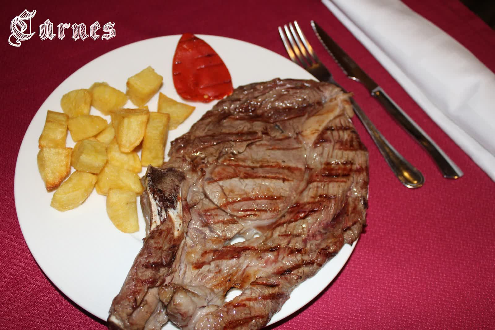
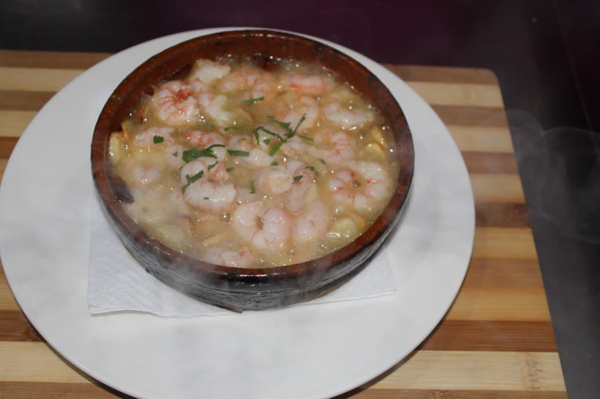

Nuestra carta
Cocina tradicional zamorana
Platos tradicionales cocinados con cariño, productos de calidad y cercanía. Sin prisa, sin atajos.

Carnes a la parrilla
Ternera zamorana, cordero lechal y cerdo cebón al punto del comensal.
Ver carnes
